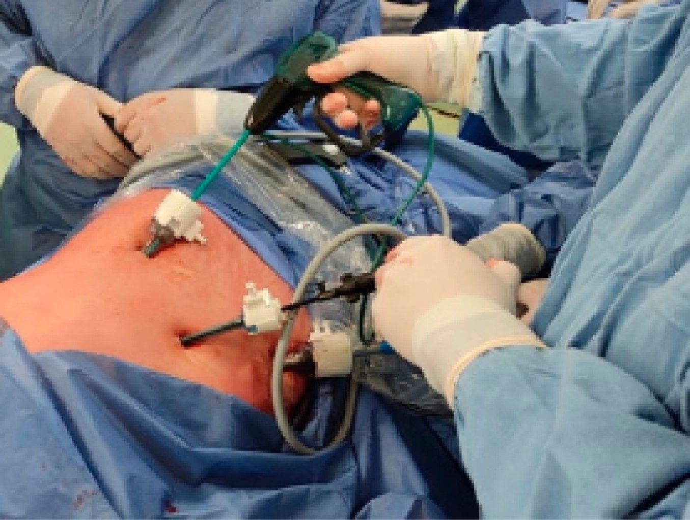
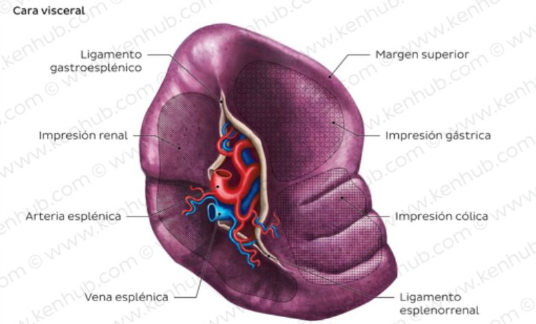
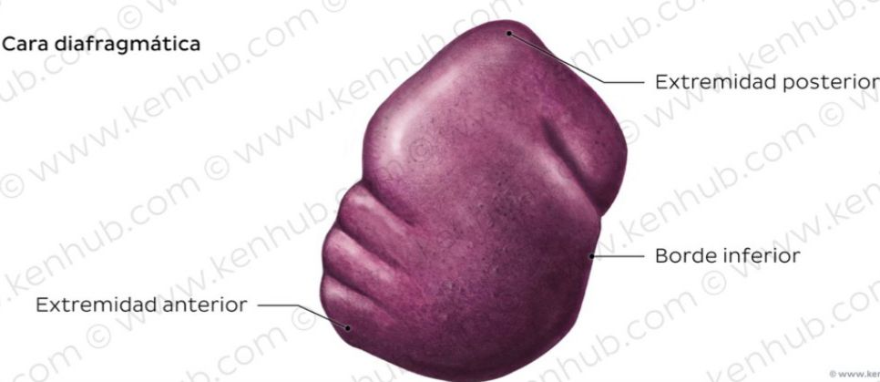
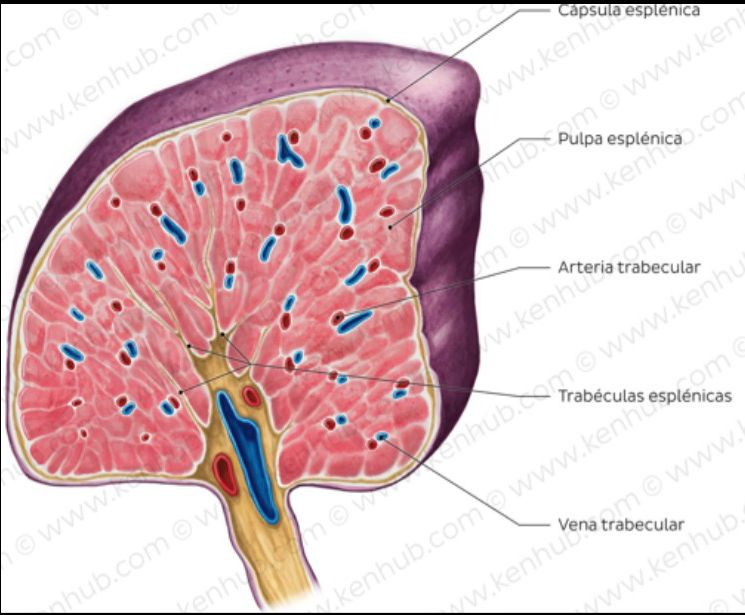

Técnica Quirúrgica Mínimamente Invasiva
Extirpación del bazo mediante pequeñas incisiones, guiada por laparoscopio e instrumentos especializados. Menor dolor, recuperación más rápida.

Cirugía Laparoscópica
La esplenectomía laparoscópica es una técnica quirúrgica mínimamente invasiva utilizada para extirpar el bazo mediante pequeñas incisiones, usando una cámara (laparoscopio) e instrumentos especializados.
Ofrece una recuperación más rápida, menor dolor postoperatorio y mejores resultados cosméticos en comparación con la cirugía abierta, siendo ideal para enfermedades hematológicas benignas.
▶ Ver procedimiento en YouTubePostoperatorio significativamente reducido respecto a cirugía abierta
Alta hospitalaria más temprana y retorno a actividades cotidianas
Incisiones de milímetros frente a la cirugía abierta convencional
Cicatrices mínimas con resultados estéticos superiores
Órgano linfoide intraperitoneal localizado en el lado izquierdo del abdomen, inferior al diafragma, en la región hipocóndrica izquierda (cuadrante superior izquierdo).
Órgano de color morado, tamaño de un puño, envuelto por una cápsula fibroelástica que permite aumentar su tamaño significativamente cuando sea necesario.
Tres bordes: superior (zona gástrica), inferior (zona renal) y anterior (zona cólica). Dos extremidades: anterior y posterior.
Solo el hilio esplénico (donde pasan arteria y vena esplénica) está libre de peritoneo.

Cara visceral del bazo

Cara diafragmática del bazo

Histología esplénica
Solo vasos eferentes
Plexo celíaco — función vasomotora
La esplenectomía laparoscópica es el método preferido en muchos casos debido a que permite menor dolor postoperatorio, menor pérdida sanguínea y recuperación más rápida en comparación con la cirugía abierta.
Cuando el bazo destruye excesivamente células sanguíneas o el tratamiento médico no es efectivo:
Cuando el bazo aumenta de tamaño produciendo:
La cirugía puede indicarse en:
En trauma abdominal con:
Poliglactina 910 · Sintética absorbible · Multifilamento
Polipropileno · Sintético no absorbible · Monofilamento
Sintética no absorbible · Monofilamento
Consulta la distribución completa en el Canva del equipo →
Posición: decúbito lateral derecho. Se colocan 3–4 trocares:
Región umbilical — entra la cámara que guía toda la cirugía
Flanco izquierdo — instrumentos de disección
Subcostal izquierdo — corte y sellado vascular
Según necesidad — apartar estructuras y mejorar visión
Se genera neumoperitoneo con CO₂ (12–15 mmHg) para crear espacio dentro del abdomen y permitir la visión laparoscópica.
Se revisan todos los órganos y se buscan bazos accesorios, que deben extirparse también para evitar recidiva de la PTI.
Se seccionan los ligamentos que fijan el bazo para acceder al hilio:
Paso más crítico. Se liga primero la arteria (reduce el tamaño del bazo y el sangrado) y luego la vena. Se usan clips, LigaSure o EndoGIA según el grosor de los vasos.
El bazo se introduce en un endobag (bolsa especial), se fragmenta dentro de ella sin contaminar la cavidad, y se extrae por un puerto ampliado.
Se verifica que no haya sangrado activo, se retiran los trocares bajo visión directa y se cierra por planos.
Durante la disección de vasos esplénicos o en el hilio, especialmente si hay infracción del parénquima o lesión de estructuras vascularizadas.
Riesgo de lesión en el borde del cuerpo o cola del páncreas durante la disección del hilio esplénico, lo que puede causar fístula pancreática.
Estómago, colon o diafragma durante la movilización y disección de ligamentos y vasos.
Riesgo de ruptura del bazo o complicaciones por manipulación excesiva en la extracción.
Puede derivar en hemorragia o lesión de órganos.
Sangrado si no se controla adecuadamente la arteria esplénica o si el hilio no se incluye correctamente.
En las primeras horas o días, por insuficiente hemostasia o lesión no detectada.
Esplénica, portal o mesentérica, producida por alteración del flujo. Requiere profilaxis con anticoagulantes.
Raras; pueden incluir infecciones en el sitio quirúrgico o por pérdida de función esplénica (microorganismos encapsulados).
Riesgo mayor en niños menores de 5 años e inmunosuprimidos. Posible desarrollo de infecciones graves.
Abscesos o fístulas en el sitio de extracción o en el lecho esplénico.
Atelectasia, especialmente si no se moviliza precozmente al paciente.
Brunicardi FC, Andersen DK, Billiar TR, Dunn DL, Hunter JG, Matthews JB. Schwartz's Principles of Surgery. 11th ed. New York: McGraw-Hill; 2019.
Townsend CM, Beauchamp RD, Evers BM, Mattox KL. Sabiston Textbook of Surgery. 21st ed. Philadelphia: Elsevier; 2022.
Habermalz B, Sauerland S, Decker G, Delaitre B, Gigot JF, Leandros E, et al. Laparoscopic splenectomy: the clinical practice guidelines. Surg Endosc. 2008;22(4):821–848.
Grupo 4 — Instrumentación Quirúrgica